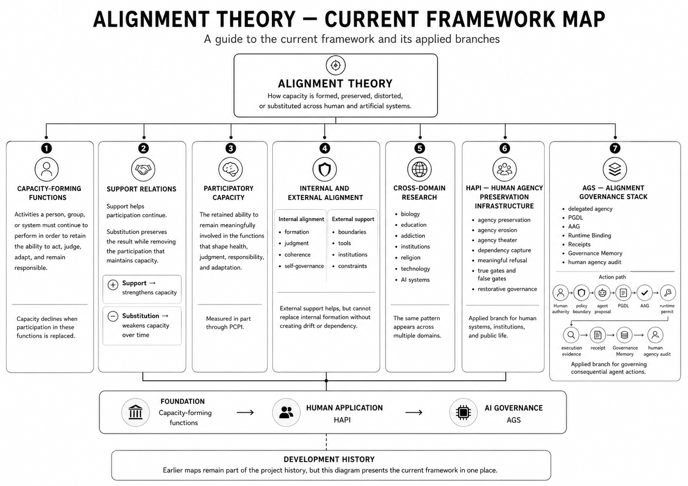

Current Framework Map
A guide to the current framework and its applied branches.
Alignment Theory examines how people, institutions, and artificial systems retain or lose the capacities they depend on. This map shows the current framework in one place and connects the foundational theory to its human-agency and AI-governance branches.

Open the full-resolution diagram for readable detail.
On small screens, use the full-resolution image link for close reading.
How To Read This Map
The page moves from the underlying theory into two applied branches: foundation to human application to AI governance.
Capacity-Forming Functions
Capacity-forming functions are activities that people, groups, or systems must continue to perform in order to retain the ability to act, judge, adapt, and remain responsible.
Capacity declines when participation in these functions is replaced.
Support Relations
Support helps participation continue. Substitution preserves an immediate result while removing the participation that maintains capacity over time.
Participatory Capacity
Participatory capacity is the retained ability to remain meaningfully involved in the functions that shape judgment, responsibility, health, and adaptation.
PCPI is a documented scoring model and early evaluation tool for examining whether AI assistance preserves participatory capacity.
Internal And External Alignment
External boundaries, tools, and institutions may support people and systems, but they cannot replace internal formation without creating drift or dependency.
Cross-Domain Research
The theory is tested by comparing how the same pattern appears across multiple domains.
- biology
- education
- addiction
- institutions
- religion
- technology
- AI systems
HAPI - Human Agency Preservation Infrastructure
HAPI applies the framework to human systems, institutions, and public life.
- agency preservation
- agency erosion
- agency theater
- dependency capture
- meaningful refusal
- true gates and false gates
- restorative governance
AGS - Alignment Governance Stack
AGS applies the framework to consequential agent actions.
- delegated agency
- PGDL
- AAG
- Runtime Binding
- Receipts
- Governance Memory
- human agency audit
Development History
The project developed through earlier theological and AI-alignment maps. Those materials remain available as part of the research history, but the diagram above presents the current framework.
Citation
Bower, Michael. (2026). Current Framework Map. AlignmentTheory.org.
@misc{bower2026currentFrameworkMap,
author = {Bower, Michael},
title = {Current Framework Map},
year = {2026},
howpublished = {AlignmentTheory.org},
url = {https://alignmenttheory.org/pages/map.html}
}